Rf
Refactobot
Инструменты кода
AI-напарник для ревью: находит мёртвый код, дубли и предлагает патчи прямо в pull request.
★ 5 130
Встроенная память помнит тебя. MaxGraph помнит все твои проекты — решения, баги, открытые задачи, итоги сессий.

Встроенная память помнит тебя. MaxGraph помнит все твои проекты.
Сайт · Блог · Telegram · Подключение

Русский · English
Память ChatGPT и Claude помнит тебя: имя, вкусы, привычки. MaxGraph помнит твою работу — решения, баги, открытые задачи, итоги сессий. Ставится один раз, и контекст проекта есть у всех твоих агентов: Claude, Cursor, DeepSeek и любых других с поддержкой MCP или REST.
| Возможность | Что даёт |
|---|---|
| 🧠 Память проекта | Решения, баги и открытые задачи — с датами, отдельно от чата. Закрыл диалог — записи остались. |
| 🚀 Старт без разгона | Каждая сессия начинается с короткой выжимки по проекту: агент сразу в курсе и не делает одну работу дважды. |
| 🔍 Семантический поиск | Находит нужное по смыслу, а не по точным словам. |
| 👀 Всё видно глазами | Дашборд: карта памяти, поиск, лента. Любую запись можно проверить, поправить или удалить. |
| 🪶 Экономия токенов | История не перечитывается целиком — примерно −43% токенов при работе с MaxGraph. |

Ничего нового учить не придётся: работаешь с агентом как обычно, память появляется сама.
Память делится на проекты: рабочий код, личные заметки и фриланс не смешиваются.
Самый простой способ — попросить своего ИИ-агента. Вставь ему в чат:
Установи MaxGraph: https://github.com/RuMemory/maxgraph — сделай всё сам по AGENTS.md. Скажи, когда память заработает.
Агент сам склонирует репозиторий, запустит установщик, подключит память и проверит, что она пишется.
Руками — одна команда (Docker не требуется):
git clone https://github.com/RuMemory/maxgraph && cd maxgraph bash install.sh --yes # Linux / macOS
# Windows (PowerShell) powershell -NoProfile -ExecutionPolicy Bypass -File .\install.ps1 -Yes
Дальше программа работает сама: иконка в трее, автозапуск с системой, автообновления.
Сервер уже запущен? Дальше одна команда или одна ссылка:
claude plugin marketplace add RuMemory/maxgraph claude plugin install maxgraph@maxgraph
PASTE_TOKEN_HERE на свой токен в Settings → MCP):cursor://anysphere.cursor-deeplink/mcp/install?name=maxgraph&config=eyJ1cmwiOiJodHRwOi8vbG9jYWxob3N0Ojg3ODcvbWNwIiwiaGVhZGVycyI6eyJBdXRob3JpemF0aW9uIjoiQmVhcmVyIFBBU1RFX1RPS0VOX0hFUkUifX0=
vscode:mcp/install?%7B%22name%22%3A%22maxgraph%22%2C%22type%22%3A%22http%22%2C%22url%22%3A%22http%3A%2F%2Flocalhost%3A8787%2Fmcp%22%2C%22headers%22%3A%7B%22Authorization%22%3A%22Bearer%20PASTE_TOKEN_HERE%22%7D%7D
Подробности по каждому клиенту: docs/PAIRING.md.
| Клиент | Как подключить |
|---|---|
| Claude Desktop / Claude Code | Плагин из маркетплейса, одна команда |
| Cursor / VS Code | Ссылка в один клик, выше |
| Cline / Continue | MCP streamable-http + Bearer |
| ChatGPT / OpenAI-совместимые | REST API или агент-адаптер |
| Kimi, GLM, Qwen, Hermes, DeepSeek | REST API — любой HTTP-клиент |
Готовые примеры настройки под каждый клиент: docs/PROVIDERS.md. Пользуешься другим агентом? Если он умеет подключать внешние инструменты, MaxGraph к нему подключится.
7 дней бесплатно, без карты. Триал начинается с первого запуска, включать ничего не нужно. Дальше один тариф со всем включённым, разовый платёж без автосписаний:
| Срок | Цена | В месяц |
|---|---|---|
| 1 месяц | 149 ₽ | 149 ₽ |
| 3 месяца | 399 ₽ | ≈ 133 ₽ |
| 6 месяцев | 749 ₽ | ≈ 125 ₽ |
| 12 месяцев | 1 299 ₽ | ≈ 108 ₽ |
Когда триал закончится, перестанет работать только запись новых фактов. Дашборд, поиск и выгрузка остаются, накопленная память никуда не денется.
Купить и активировать: rezon-ai.ru
У MaxGraph есть реферальная программа. Друг покупает со скидкой −20%, а ты получаешь +10% к скидке на продление за каждого приглашённого, вплоть до −50%. Твоя ссылка и статистика переходов — в дашборде, раздел «Система».
Все записи хранятся только на твоём компьютере и работают офлайн. Это обычные текстовые файлы в папке data/: их можно открыть, прочитать и скопировать в любой момент. Из дашборда всё выгружается одним файлом (экспорт в NDJSON).
Документы: PROTOCOL · API · PROVIDERS · PAIRING · DEPLOY-LAN
MaxGraph живёт на поддержку пользователей. Если проект оказался полезным, можно просто сказать спасибо: rezon-ai.ru#donate. Разовый перевод 99, 249 или 499 ₽, без подписки и автосписаний.
BSL-1.1: исходный код открыт. Личное и внутреннее использование — бесплатно. Продажа MaxGraph как сервиса — по коммерческой лицензии. Каждая версия становится MIT через четыре года после публикации.
mcp server ai memory llm context knowledge graph persistent memory for ai agents model context protocol memory for claude code claude code plugin cursor memory vscode mcp chatgpt memory agent memory context engineering semantic search long-term memory for llm self-hosted ai память для нейросети память для ИИ-агентов MCP сервер памяти граф знаний долговременная память ИИ экономия токенов память для Claude память для ChatGPT память для Cursor локальная память для ИИ
Установи один раз — и каждый твой агент помнит проект.
AI-напарник для ревью: находит мёртвый код, дубли и предлагает патчи прямо в pull request.
Персональный ассистент, собранный из ваших заметок, почты и календаря. Работает локально.
Cron с человеческим лицом: расписания пишутся словами, а логи читаются как история.
Превращает скриншоты в аккуратные мокапы для лендинга за десять секунд.
Комментарии 3
сначала полезныеСпасибо за отзывы недели — по ним допилил снапшоты сессий. Если чего-то не хватает в MCP-инструментах, пишите сюда или в issues.
Поставила на DeepSeek Harness — память реально переживает сжатие контекста. Единственное: хочется экспорт графа в Obsidian.
Кейс: агент три дня вёл миграцию на Postgres и ни разу не переспросил решения, принятые в первый день. Раньше это была боль каждой сессии.